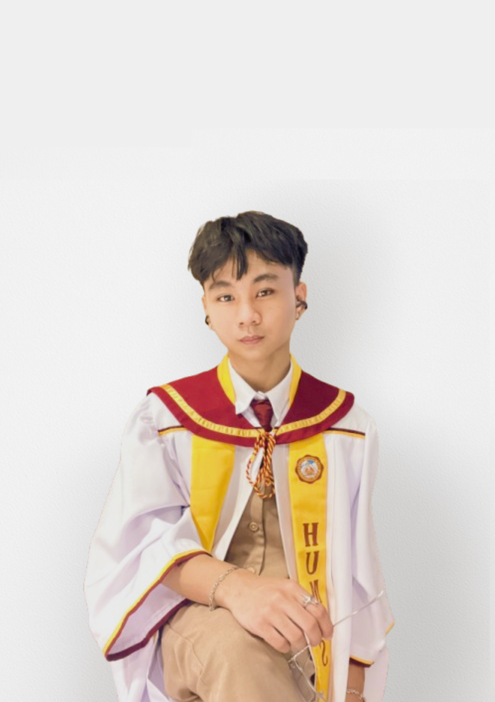
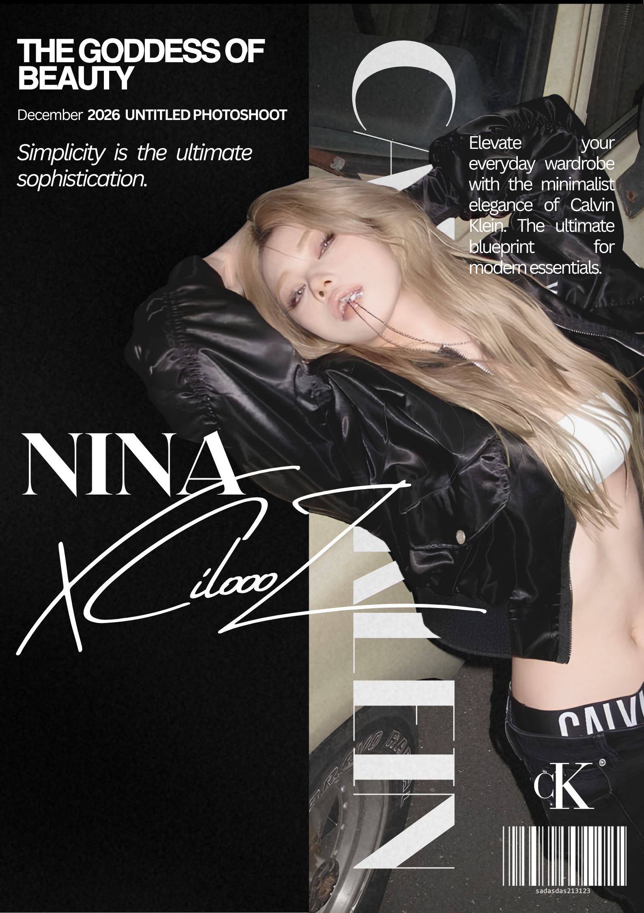
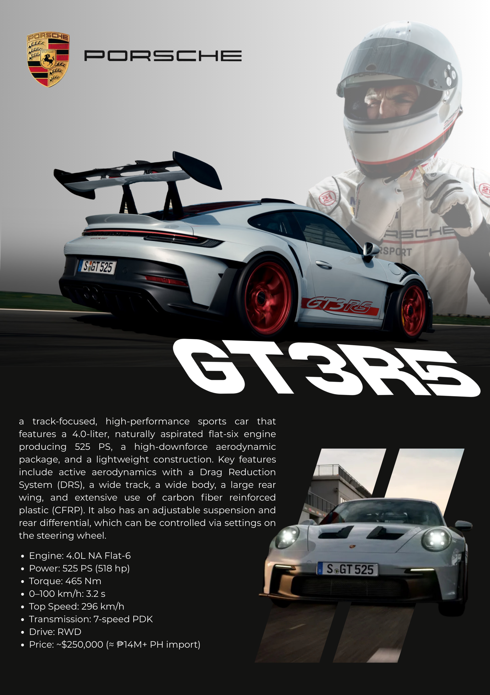
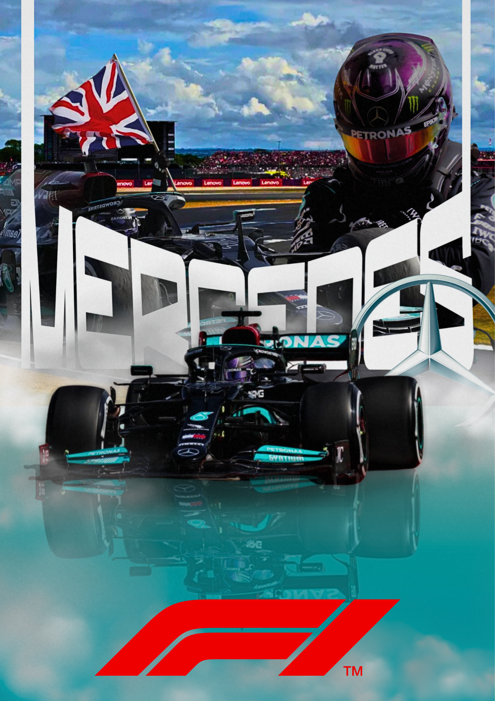
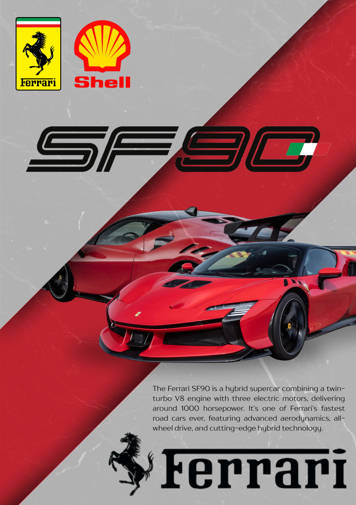

_
I help students, creators, and small businesses build cleaner websites, graphics, videos, and digital support materials with a creative and practical style.
Hello, I’m Nath!
I am a BS Cybersecurity student and a creative digital freelancer. I enjoy building websites, designing graphics, editing videos, and helping with online tasks. I am still growing and learning, but I always do my best to make every project clean, organized, and useful.
I like combining creativity with technology. My goal is to help individuals, students, creators, and small businesses improve their online presence through simple, visual, and practical digital work.

My Main Skills
My main skills are web design, graphic design, video editing, and virtual assistance. I can create responsive websites using HTML, CSS, and JavaScript, design social media graphics and visual materials, edit short-form videos, and help with basic digital tasks such as data entry, research, file organization, and online support.
Creative digital work with a clean cyber-style identity.
Tools That I Use
These are the main tools I use for designing visuals, editing content, building websites, and organizing digital work.
Canva
Graphics, posters, social media layouts, and simple brand visuals.
CapCut
Short-form videos, reels, captions, transitions, and basic edits.
AI Tools
Idea support, content planning, writing help, and faster workflow.
VS Code
HTML, CSS, JavaScript, website editing, and frontend development.
Services I Offer
Web Design & Development
I create responsive websites using HTML, CSS, and JavaScript. I focus on clean layouts, smooth interactions, and designs that work well on both desktop and mobile.
Graphic Design
I design posters, social media graphics, branding materials, thumbnails, and other visual content for personal, school, business, or online use.
Video Editing
I edit short-form videos, reels, school content, and simple promotional videos with clean pacing, captions, transitions, and visual style.
Virtual Assistance
I can help with digital tasks such as data entry, file organization, research, email support, basic admin work, and online content support.
A Creative Digital Freelancer
I focus on practical digital work that looks clean, organized, and easy to understand. Whether it is a website, graphic design, video edit, or online task, I try to make the final output visually strong and useful for the person or brand I am helping.
Things about me
Continuous upskilling through specialized cybersecurity and tech certifications.
[01] Creative & UI Design
Visual Identity
Crafting high-contrast Y2K aesthetics, acid graphics, and striking digital art posters.
Video Production
Editing dynamic short-form content, social media templates, and motion graphics.
UI/UX Prototyping
Designing intuitive, user-centric interfaces and wireframes for web and mobile platforms.
Content Layout
Structuring engaging social media feeds and digital branding materials.
[02] Dev & Scripting
Frontend Architecture
Building responsive, grid-based web layouts from scratch using HTML and CSS.
Object-Oriented Programming
Developing and structuring logic-driven applications using C++ and Python.
Code Optimization
Debugging, streamlining, and simplifying complex code structures for better performance.
Modern Integration
Implementing seamless web animations and interactive user elements.
[03] Security Foundations
Linux Environments
Learning Linux environments through Ubuntu and WSL while practicing command-line tools and system navigation.Network Analysis
Using Wireshark to explore packet analysis and understand how network traffic flows.
Vulnerability Scanning
Learning network discovery and host enumeration techniques using tools such as Nmap.
System Mechanics
Developing a deeper understanding of computer systems, networking, and digital infrastructure.
Verified Credentials
Continuous upskilling and getting tech certifications.
SIEM Architecture
CompTIA Tech+ FC0-U71
Prompt Engineering
Vulnerability Mgmt.
My Journey of Learning
Academic progression, architectural deployments, and project history.
Applied Frontend & UI/UX
Web Development Projects
Developed responsive academic and personal web projects while practicing real-world design workflows and project planning.
Independent Tech Upskilling
Continuous Value Expansion
Actively hunted specialized certifications outside of standard academic requirements to increase freelance value. Earned credentials in Vulnerability Management, Prompt Engineering, CompTIA Tech+, and SIEM architecture.
BS Cybersecurity Initiation
FEU Institute of Technology
Began formal Studies in cybersecurity and network topologies (Cisco Packet Tracer). Balancing a demanding academic schedule while independently managing remote freelance client workloads.
Freelance Media & VA Support
Creative Execution
Established a foundation in digital content creation by delivering short-form video edits and graphic design assets for independent clients. Developed the core soft skills of remote communication and rapid task execution.
My Graphic Design works










Client Video Commissions
High-retention short-form video content and motion graphics optimized for TikTok, Reels, and Shorts.
Connect with Me!
Status: Open for Projects
I am open to simple websites, graphic design work, video edits, and virtual assistance tasks. Send me a message and we can discuss what you need, your deadline, and how I can help.